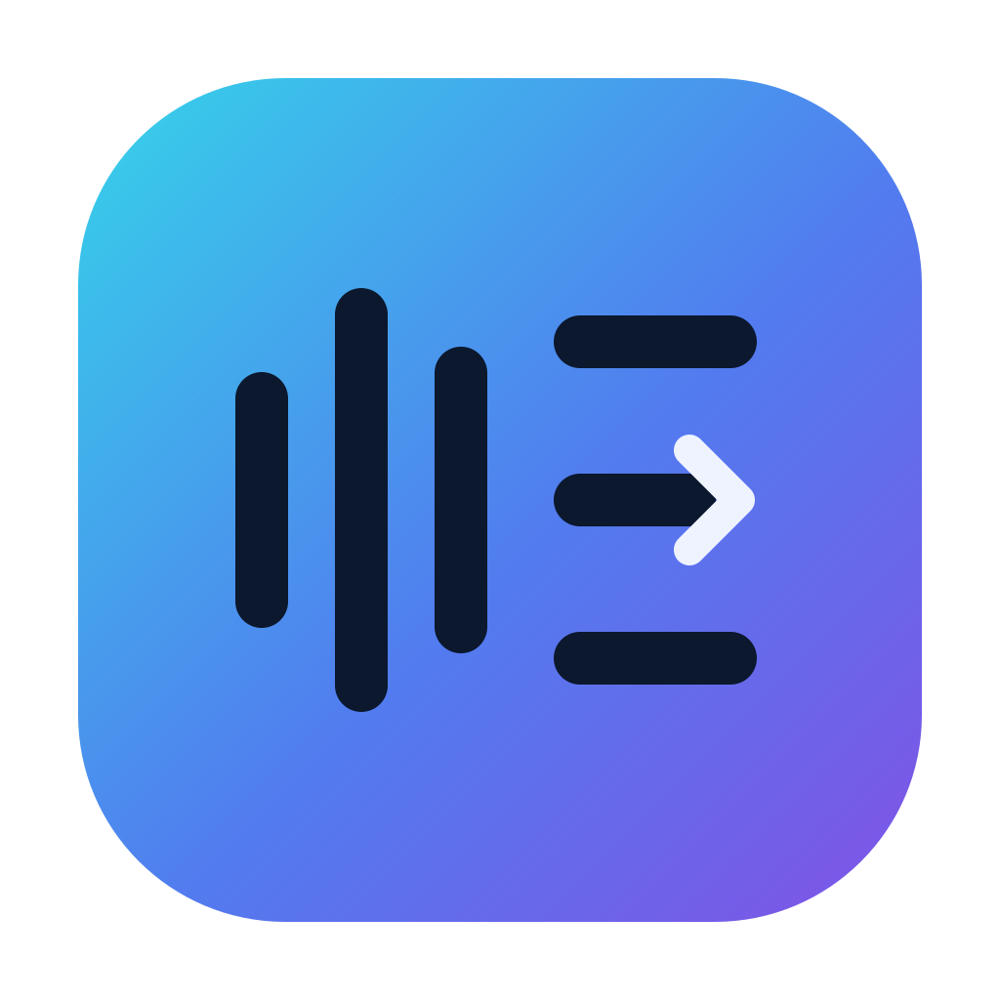

Retrouve chaque partie.
Sépare un morceau en 4 ou 6 pistes. Ajuste les niveaux, isole un instrument ou retire celui que tu joues.

BandStudioTélécharger ↓DE L’ÉCOUTE À LA RÉPÉTITION
Sépare les instruments, travaille les paroles et les accords.
Prépare ta partie et exporte ton morceau dans REAPER.
Chant, guitare, basse, claviers ou batterie :
BandStudio fait de la place à chaque musicien.
LE MORCEAU DU SOIR
Aperçu interactif · illustration sans lecture audio
Chanteurs · Guitaristes · Bassistes · Claviéristes · Batteurs
01 / TON ATELIER MUSICAL
Un fichier audio devient un espace de travail.
Tu gardes la main sur les choix musicaux.
Sépare un morceau en 4 ou 6 pistes. Ajuste les niveaux, isole un instrument ou retire celui que tu joues.
Ralentis sans changer la hauteur, transpose et boucle un passage. Le métronome et le décompte accompagnent tes reprises.
Corrige les sections, les accords et les paroles synchronisées. Valide ton morceau, puis envoie les pistes et les repères dans REAPER.
LES BONS OUTILS, AU BON ENDROIT
Tout part de ton morceau.
Tout reste sur ton ordinateur.
Original, mix, « sans mon instrument » ou solo. Les choix d’écoute suivent le morceau jusqu’à l’export.
Vitesse de 50 à 150 %, transposition de −12 à +12 demi-tons, tonalité détectée et accords adaptés au capo.
Transcription locale, paroles synchronisées et grille harmonique. Corrige les propositions et importe tes fichiers LRC ou SRT.
Click, décompte, annonces de sections et repères personnels. Contrôle leurs niveaux et leur placement.
Exports audio, pistes séparées, paroles, fiche PDF et projet REAPER avec les médias. Tes fichiers sources sont conservés.
DEUX APPLICATIONS, UN MÊME GROUPE
Deux outils complémentaires, avec le même esprit :
des commandes lisibles et la musique au premier plan.
Stems, parties à travailler,
click et repères musicaux.
Console, balances guidées,
retours et répétitions.
Chaque application fonctionne indépendamment. REAPER fait le lien avec les morceaux préparés.
À TOI DE JOUER
BandStudio est gratuit et open source.
Choisis ton système pour commencer.
Windows : décompresse tout le ZIP, puis ouvre BandStudio.exe. WebView2 requis. macOS : installation initiale depuis les sources ; mises à jour des installations préparées, sur Intel et Apple Silicon. Aucun installateur macOS complet pour un ordinateur neuf n’est encore distribué.
Versions et notes de publication ↗Pour installer les composants et télécharger les mises à jour, oui. L’analyse et la préparation de tes morceaux se font localement. Les mises à jour automatiques peuvent être désactivées.
Non. La séparation peut laisser des résidus et les accords, paroles ou sections peuvent demander une correction. Tu écoutes et valides avant l’envoi dans REAPER.
Les modèles disponibles déterminent les instruments séparables. Les sous-pistes avancées de tous les instruments ne sont pas proposées. Le matériel audio Windows et les moteurs facultatifs doivent être vérifiés sur ton ordinateur.
Dans Réglages, exporte un diagnostic et ouvre « Signaler un bug sur GitHub ». Vérifie le fichier avant de le joindre. Les logs restent locaux jusqu’à ton partage.
Le code BandStudio est sous licence MIT. Les composants conservent leurs licences ; certains modèles facultatifs de structure ou de batterie sont réservés à un usage non commercial. Lire les licences.